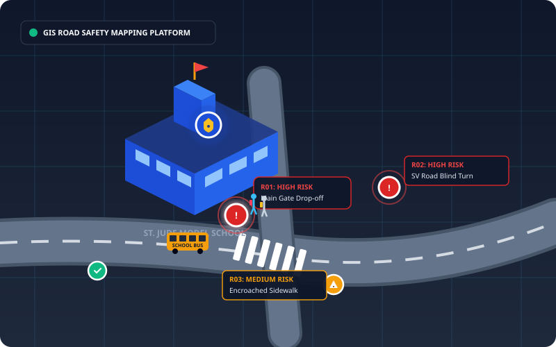

Road Safety Mapping Around Schools
Identifying road hazards, traffic conflicts, and pedestrian vulnerabilities around educational institutions through on-site field visits, community stakeholder surveys, and digital GIS risk mapping.

The Road Safety Crisis Around School Zones
School arrival and dispersal periods create severe traffic surges where young pedestrians must navigate chaotic traffic, improper vehicular parking, speeding vehicles, and deficient infrastructure.
🚗 Drop-off & Pick-up Congestion
Private cars, school vans, and auto-rickshaws double-park directly outside school entry gates, obstructing visibility lines and creating blind spots for crossing schoolchildren.
⚡ Excessive Speeding & Blind Turns
Lack of physical speed calming tables, rumble strips, and radar enforcement allows through-traffic to operate at dangerous speeds within designated school buffer perimeters.
🚶 Broken & Encroached Sidewalks
Footpaths obstructed by utility boxes, construction debris, or unauthorized vendors force over 75% of walking children directly onto the active vehicular carriageway.
How The CEP Project Works
A real-world empirical pipeline connecting on-ground field observations with computational data analysis, GIS mapping, and policy proposals.
Featured High-Risk Locations
Critical problem hotspots identified within the 500-meter school study zone requiring immediate traffic intervention.
Key Dynamic Findings
Synthesis of quantitative survey responses and physical field inspection notes.
Chaotic Dispersal Parking
84% of surveyed parents and residents cite improper drop-off double parking as the primary impediment to safe pedestrian sightlines.
Crossing Vulnerability
76% of respondents experience extreme difficulty crossing Swami Vivekananda Road approach lanes due to non-existent or faded zebra markings.
Active Student Commuters
42% of students walk or cycle to school, representing the most vulnerable road users exposed to motorized vehicular risks daily.
Support Safer School Zones in Mumbai
Whether you are a student, parent, educator, or local resident, your lived experience makes a direct difference in our safety assessment.